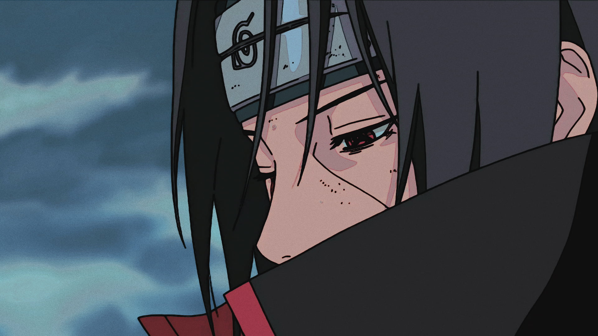
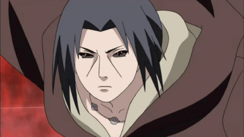

“Those who forgive themselves, and are able to accept their true nature… They are the strong ones!”
--ITACHI UCHIHA
Itachi Uchiha was a shinobi of Konohagakure's Uchiha clan who served as an Anbu Captain. He later became an international criminal after murdering his entire clan, sparing only his younger brother, Sasuke. He afterwards joined the international criminal organisation known as Akatsuki, whose activity brought him into frequent conflict with Konoha and its ninja — including Sasuke who sought to avenge their clan by killing Itachi. Following his death, Itachi's motives were revealed to be more complicated than they seemed and that his actions were only ever in the interest of his brother and village, making him remain a loyal shinobi of Konohagakure to the very end.
 Itachi awakened the Mangekyō Sharingan after witnessing Shisui's suicide. Its design was three spiralling curves around the pupil. With his right eye he could use Amaterasu, igniting whatever he looked at with black flames that would burn anything, including fire itself, and at will extinguish Amaterasu. With either eye, he could use Tsukuyomi, a genjutsu that trapped opponents' minds in an illusory world of his own design — capable of altering their perception of matter, space, gravity, and even time. Having awakened the Mangekyō in both his eyes, Itachi could also use Susanoo.Itachi's Susanoo wielded the Sword of Totsuka - an ethereal sword with the ability to seal any person it pierced into its gourd—hilt and the Yata Mirror - a shield that was said to reflect any attack by changing its chakra nature to counterbalance an attack.
Itachi chose HATRED instead of honor...PAIN instead of Love...DARKNESS instead of Light...